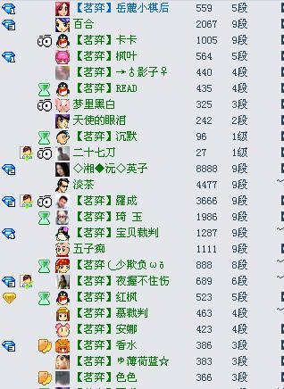

四月茗弈家族内部交流赛10号比赛结果
首页
茗弈阁
#1 四月茗弈家族内部交流赛10号比赛结果 作者：雅典娜 发表时间：2009-4-11 14:39:54
2009年4月10号茗弈家族的内部交流赛初赛顺利结束。8人胜出，进入决赛。

［ 茗弈小刀 于 2009-4-11 16:10:53 时奖励此帖[金币加 20 威望加1］
#2 Re:四月茗弈家族内部交流赛10号比赛结果 作者：岳麓小棋后 发表时间：2009-4-11 15:08:31


昨天比赛开始时的一些截影，小棋后红字祝贺！！！
［ 茗弈小刀 于 2009-4-11 16:11:06 时奖励此帖[金币加 20 威望加1］
#3 Re:四月茗弈家族内部交流赛10号比赛结果 作者：茗弈小刀 发表时间：2009-4-11 16:18:33
辛苦安娜和小棋后妹妹了，谢谢！
A组成绩出来了：聂森（成都教父）夺冠！
少欺负我--亚军
红枫----季军 恭喜！
B组第2轮于17日晚7点半角逐。大家加油！
#4 Re:四月茗弈家族内部交流赛10号比赛结果 作者：南京小飞机 发表时间：2009-4-11 16:41:37
51桌坐头猪
#5 Re:四月茗弈家族内部交流赛10号比赛结果 作者：刀魂 发表时间：2009-4-11 22:07:03
祝茗奕 家族内部赛 取得圆满成功，并且下出精彩对局。。。
#6 Re:四月茗弈家族内部交流赛10号比赛结果 作者：流浪者的梦 发表时间：2009-4-12 11:26:07
恭喜恭喜！我终于可以留言了~
#7 Re:四月茗弈家族内部交流赛10号比赛结果 作者：小丸.net 发表时间：2009-4-12 11:36:24
上联：近人者亦人
下联：近猪者亦猪
横批：天下亦猪
谨以此联敬赠南京小飞机阁下
#8 Re:四月茗弈家族内部交流赛10号比赛结果 作者：茗弈小刀 发表时间：2009-4-13 10:29:35
 我也回赠51桌一首对联
我也回赠51桌一首对联
上联：远猪者亦猪
下联：远人者亦猪
横批：唯猪独尊
#9 Re:四月茗弈家族内部交流赛10号比赛结果 作者：茗弈梓轩 发表时间：2009-4-13 14:37:57
小刀姐的文笔了得，佩服，佩服！！